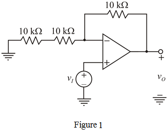
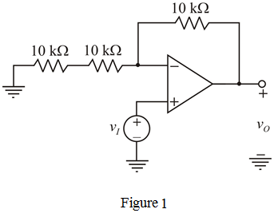
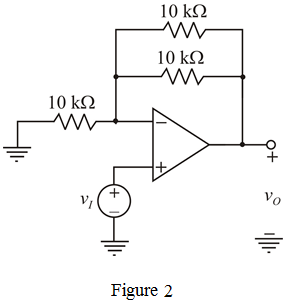

Case 1:
Take two  resistors in series at input and take one
resistors in series at input and take one  resistor at feedback path, the modified circuit is shown in Figure 1.
resistor at feedback path, the modified circuit is shown in Figure 1.

Refer to non-inverting amplifier in Figure 2.12 in the textbook.
The voltage gain of the non-inverting amplifier is,
Case 1:
Take two resistors in series at input and take one resistor at feedback path, the modified circuit is shown in Figure 1.

Calculate the voltage gain for non-inverting amplifier shown in Figure 1.
Therefore, the voltage gain is .
Now short the one of the two series connected resistors in Figure 1.
Calculate the voltage gain.
By short circuiting one  resistor at input, the voltage gain obtained is .
resistor at input, the voltage gain obtained is .
Case 2:
Take one  resistor at input and take two
resistor at input and take two  resistors in parallel at feedback path, the modified circuit is shown in Figure 2.
resistors in parallel at feedback path, the modified circuit is shown in Figure 2.

Calculate the voltage gain for non-inverting amplifier shown in Figure 2.

Therefore, the voltage gain is .
Now short the one of the two parallel connected resistors in Figure 2.
Calculate the voltage gain.
By short circuiting one  resistor in feedback, we can get a gain of .
resistor in feedback, we can get a gain of .